|
Taþýtýn arka aksý Þekil 7'de görülmektedir. "Dört noktadan askýlý sabit aks" olarak adlandýrýlan bu konstrüksiyonlarda yalpa merkezinin konumu, sistemi oluþturan iki adet dört kol mekanizmasýnýn ani dönme merkezleri üzerinden Þekil 8'de görüldüðü gibi bulunur [1, 8, 9, 10, 11]. Bu tip akslarda, baðýmsýz aský sistemlerinden farklý olarak, artan  açýsý deðeri için yalpa merkezi MP'nin statik durumdaki konumunu yaklaþýk olarak koruduðu kabul edilmektedir [3]. Yalpa merkezlerinin yerden yükseklikleri ön aksta hMPV=183,4(mm) ve arka aksta hMPH=694(mm) olarak ölçülmüþ, böylece hX=678,6(mm) bulunmuþtur. Yalpa ekseninin X ekseniyle yapmýþ olduðu ß açýsý, model geometrisi yardýmýyla 4,8° olarak hesaplanmýþ, açý deðeri düþük olduðu için gövdenin X' yerine X ekseni çevresinde hareket ettiði düþünülmüþtür. Yalpa açýsý, Þekil 6 üzerinden moment dengesi yazýlarak; açýsý deðeri için yalpa merkezi MP'nin statik durumdaki konumunu yaklaþýk olarak koruduðu kabul edilmektedir [3]. Yalpa merkezlerinin yerden yükseklikleri ön aksta hMPV=183,4(mm) ve arka aksta hMPH=694(mm) olarak ölçülmüþ, böylece hX=678,6(mm) bulunmuþtur. Yalpa ekseninin X ekseniyle yapmýþ olduðu ß açýsý, model geometrisi yardýmýyla 4,8° olarak hesaplanmýþ, açý deðeri düþük olduðu için gövdenin X' yerine X ekseni çevresinde hareket ettiði düþünülmüþtür. Yalpa açýsý, Þekil 6 üzerinden moment dengesi yazýlarak;
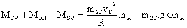 (5)
ya da,
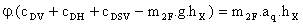 (6)
olmak üzere,
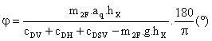 (7)
þeklinde bulunur. Burada vF taþýtýn çizgisel hýzý, R dönme yarýçapý ve aq yanal ivmedir. Taþýt gövdesinin m2F=14788 (kg)'lýk yaylandýrýlmýþ kütlesi ve Tablo 2'de verilen yay katsayýsý deðerleri yardýmýyla (7) baðýntýsýndan, sistemde stabilizatör bulunmamasý durumunda (cDSV = 0 için);
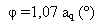 (8)
bulunur. Literatürde önerilen  0,6.aq (°) sýnýrlamasýnýn saðlanabilmesi için yaylarýn, taþýt konforunu bozmamak koþuluyla daha sert karakteristikte seçilmesi ya da uygun aksa stabilizatör monte edilmesi önerilebilir. Ýkinci çözümün uygulanmasý durumunda sisteme eklenmesi gereken stabilizatörün eþdeðer burulma yayý katsayýsý (7) denkleminden cDSV = 418,7 (kNm/rad) olarak hesaplanmýþtýr. 0,6.aq (°) sýnýrlamasýnýn saðlanabilmesi için yaylarýn, taþýt konforunu bozmamak koþuluyla daha sert karakteristikte seçilmesi ya da uygun aksa stabilizatör monte edilmesi önerilebilir. Ýkinci çözümün uygulanmasý durumunda sisteme eklenmesi gereken stabilizatörün eþdeðer burulma yayý katsayýsý (7) denkleminden cDSV = 418,7 (kNm/rad) olarak hesaplanmýþtýr.
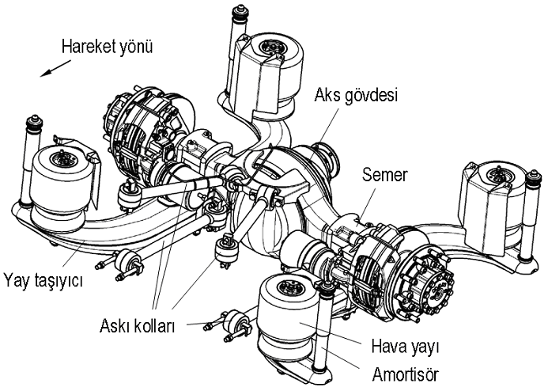
Þekil 7. Taþýtýn dört noktadan askýlý sabit arka aksý
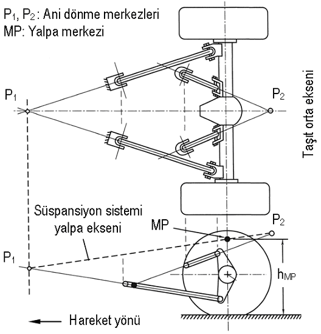
Þekil 8. Dört noktadan askýlý sabit aksta yalpa merkezinin bulunmasý [1, 8].
2.3. Taþýt gövdesinin yalpa simülasyonu
Akslarý gövdeye baðlayan aský kollarýnýn, dolayýsýyla yalpa merkezlerinin viraj hareketi sýrasýndaki konum deðiþimlerinin matematik modelden elde edilen yalpa açýsý deðerlerine etkisini incelemek amacýyla, yolcu otobüsünün kinematik ve kinetik analizlere olanak saðlayan 1:1 ölçekli bir modeli oluþturulmuþtur. SolidWorks® paket programýnda hazýrlanan ve Þekil 9'da genel görünümü verilen bu modelde, kollarýn aks ve gövdeye basit küresel mafsallarla baðlandýðý düþünülmüþ, baðlantý noktalarýndaki ve lastik tekerleklerin sahip olduðu elastiklik ihmal edilmiþtir. Modelde, gerçek montaj noktalarýnda tanýmlanan hava yaylarýnýn (1...4) katsayýsý, matematik modelde tekerlek temas noktalarý için bulunan teorik deðerler yardýmýyla;
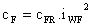 (9)
baðýntýsýndan hesaplanmýþtýr [12].
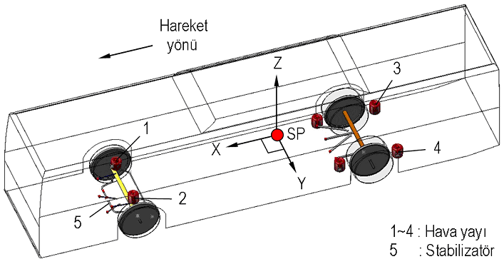
Þekil 9. Simülasyon modeli
Burada iWF tekerlek temas noktalarý ile yaylarýn gerçek montaj noktalarý arasýnda yalpalama durumu için tanýmlanan yay kuvveti çevrim oranýdýr. Bu oran yay ekseninin uzaydaki açýsal yerleþimine de baðlý olup, Þekil 10'a göre basitleþtirilmiþ olarak,
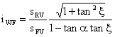 (10)
þeklinde yazýlýr [1, 13]. Baðýntýda , statik durumdaki yalpa merkezi ile yayýn aksa oturduðu O noktasýný birleþtiren teorik doðrunun Y ekseni ile yaptýðý açýdýr. Stabilizatör çevrim oraný da benzer þekilde,
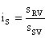 (11)
olarak yazýlýr. Yay çevrim oranlarý, taþýtýn teknik deðerleri üzerinden ön ve arka aksta sýrasýyla iWFV= 1,7(-) ve iWFH= 1,1(-) olarak hesaplanmýþ, stabilizatör çevrim oraný ise parçanýn aks gövdesine yataklanmasý öngörülen F ve F' noktalarýnýn konumuna baðlý olarak ve (11) baðýntýsýna göre iSV=1,85(-) olarak bulunmuþtur. Simülasyonda stabilizatörün rijit A ve B elemanlarýndan oluþtuðu düþünülmüþ ve burulma yay katsayýsý cSV, bu iki parça arasýnda Þekil 11'de görüldüðü gibi tanýmlanmýþtýr.
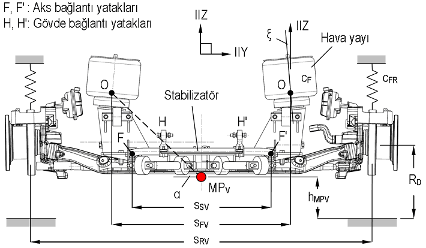
Þekil 10. Ön aksta yay ve stabilizatör çevrim oranlarý için hesap büyüklükleri
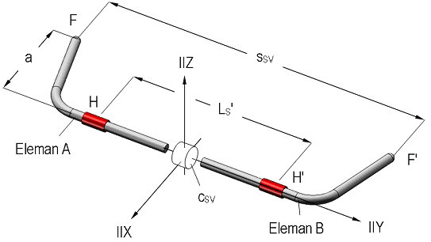
Þekil 11. Simülasyonda kullanýlan stabilizatör modeli (þematik)
Þekil 12'de, taþýt gövdesinin kadar yalpa yapmasý sonucu F' yataðýna etkiyen FS kuvveti altýnda düþey yönde z1 kadar elastik þekil deðiþtiren stabilizatör bacaðý görülmektedir. Sabit akslý bir taþýtýn viraj hareketi sýrasýnda, Þekil 1'de görülen yol yüzeyine sabitlenmiþ X0-Y0-Z0 eksen takýmýna göre deðerlendirildiðinde; gerçekte stabilizatörün aks gövdesine baðlý F ve F' yataklarý düþey eksende hareket etmez. Sýrt bölgesi ise taþýt gövdesiyle birlikte yalpa açýsý kadar YZ düzleminde döner. Taþýt kütle merkezine sabitlenmiþ X-Y-Z eksen takýmý açýsýndan bakýldýðýnda ise sýrt sabit kalýrken, bacak yataklarýnýn YZ düzleminde, Z eksenine göre açýsý kadar dönmüþ yeni bir z1 ekseni boyunca (bkz. Þekil 3) z1 ve diðer bacakta z2 = z1 kadar elastik þekil deðiþtirdiði düþünülebilir.
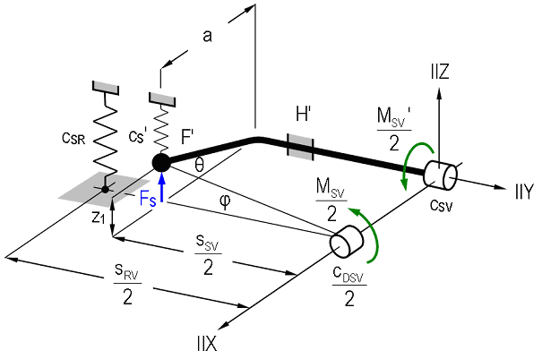
Þekil 12. Simülasyon modeli yay katsayýsý cSV'nin hesaplanmasý (þematik)
Bacaklardaki elastik þekil deðiþiminin tarifini basitleþtirdiðinden, Þekil 12'deki yarým stabilizatör modelinde, anýlan ikinci yaklaþým esas alýnmýþ, ancak sýrt bölgesinin yere paralel kaldýðý kabul edilmiþtir. Bu kabulün, bacaklarýn z1 ve z2 sehim deðerlerinin hesabýnda pratik bir etkisi bulunmamaktadýr. Buna göre cSV deðeri, cSR ve cS' sýrasýyla, tekerlek temas noktasýna ve stabilizatör bacak yataðýna (F') indirgenmiþ yay katsayýlarý olmak üzere;
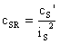 (12)
ve
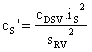 (13)
olduðundan;
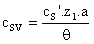 (14)
eþitliði üzerinden bulunmuþtur. Burada,
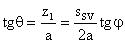 (15)
þeklindedir. Böylelikle, cS'= 326,2 (kN/m) ve cSV= 555,6 (kNmm/°) olarak hesaplanmýþtýr. cSV, Ayný zamanda, konstrüksiyona eklenecek gerçek stabilizatöre ait burulma yay katsayýsýdýr. Hesaplanan cSV ve cF deðerleri kullanýlarak, taþýt gövdesinin virajdaki yalpa davranýþý COSMOSMotion® programýnda yanal ivmenin çeþitli deðerleri için simüle edilmiþtir. Matematik model ve simülasyondan yanal ivmenin fonksiyonu olarak elde edilen yalpa açýsý deðerleri, sýrasýyla stabilizatörsüz ve stabilizatörlü aks konstrüksiyonlarý için Þekil 13'te karþýlaþtýrýlmýþtýr.
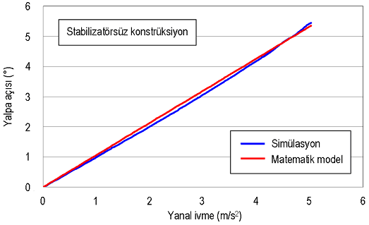
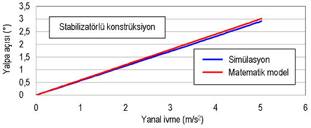
Þekil 13. Matematik model ve simülasyon sonuçlarýnýn karþýlaþtýrýlmasý
Bu sonuçlara göre, yanal ivmenin yüksek deðerleri için akslarýn yalpa merkezi yüksekliðindeki deðiþimler, hesaplanan açý deðerlerinde önemli bir farka yol açmamaktadýr. Bu nedenle matematik modeldeki sabit yalpa merkezi kabulü yeterli bir yaklaþýmdýr. Ýncelenen her iki basitleþtirilmiþ modelde de, virajda taþýt gövdesine etkiyen jiroskopik moment ve hava direncinin etkileri ihmal edilmiþtir.
|